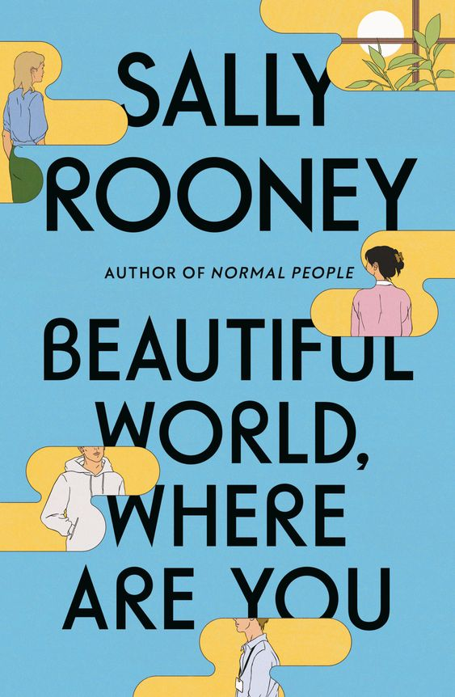
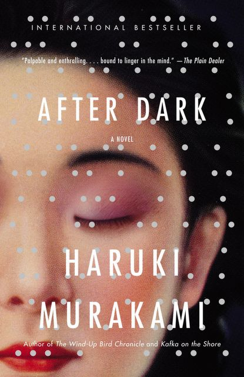
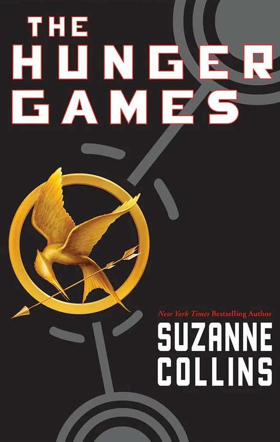

Normal People
Author: Sally Rooney
Normal People" is a poignant and beautifully
written novel that delves into
the intricacies of human
connection and the transformative power of love.
Set in
contemporary Ireland, the story follows the lives of two
main
characters, Marianne and Connell, as they navigate
the challenges
of adolescence and young adulthood.
The narrative is a powerful
exploration of the class divide
and social hierarchy, as Marianne
and Connell come from
very different backgrounds. Connell is
popular, well-liked,
and comes from a working-class family, while
Marianne is
a highly intelligent but socially ostracized young woman
from a wealthy family. Their complex relationship, which
begins in
high school, evolves throughout the years, reflecting
the ebb and
flow of their personal growth, desires, and insecurities.

After Dark
Author: Haruki Murakami
"After Dark" is a novel by Haruki Murakami that takes place during
the late hours of
the night and early morning in Tokyo. The story
revolves around several characters
and their encounters during
this time. It's a somewhat surreal and atmospheric book
that
explores themes of isolation,loneliness, and the mysteries of the
night.The
book's use of jazz music is a recurring motif, adding
to the overall ambiance of the story.
It highlights the idea that
in the stillness of the night, people can explore their innermost
thoughts and emotions, much like a jazz musician improvising
on their instrument.
"After Dark" is a relatively short novel,
and it can be read in one sitting, which adds
to the immersive quality
of the story. However, some readers may find that the open-ended
conclusion leaves them with unanswered questions and a desire for
more closure.
Norwegian Wood
Author: Haruki Murakami
"Readers are drawn to this novel for its relatable and well-developed characters,
the evocative
descriptions of Tokyo and the human psyche, and its exploration of
themes like loneliness and
the quest for meaning in a world that often feels disconnected.
While some may find the book's melancholic tone and exploration of mental health
challenging,
others appreciate its depth and the raw, honest way it tackles these themes.
"Norwegian Wood" is
a book that lingers in the reader's mind, evoking a sense of nostalgia
and introspection long
after the last page is turned.

Hunger Games
Author: Suzanne Collins
"The Hunger Games" is a popular dystopian novel by Suzanne Collins
that
has captivated readers of various ages. It's set in a dark and
oppressive
future where society is divided into districts, and young
people are forced
to participate in a brutal televised competition
called the Hunger Games.
"The Hunger Games" is a gripping and
thought-provoking dystopian novel that
has resonated with readers
due to its strong characters, intense plot, and
societal critiques.
It's a series that has left a significant impact on
both young adult
literature and popular culture.